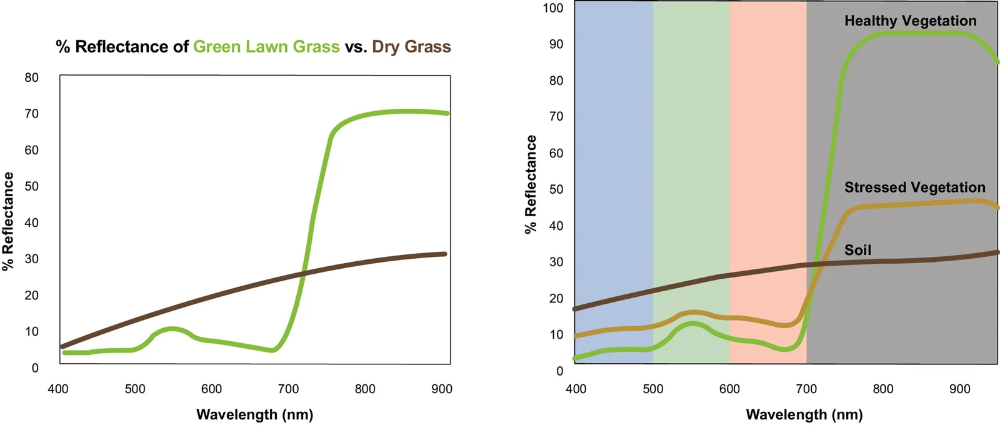
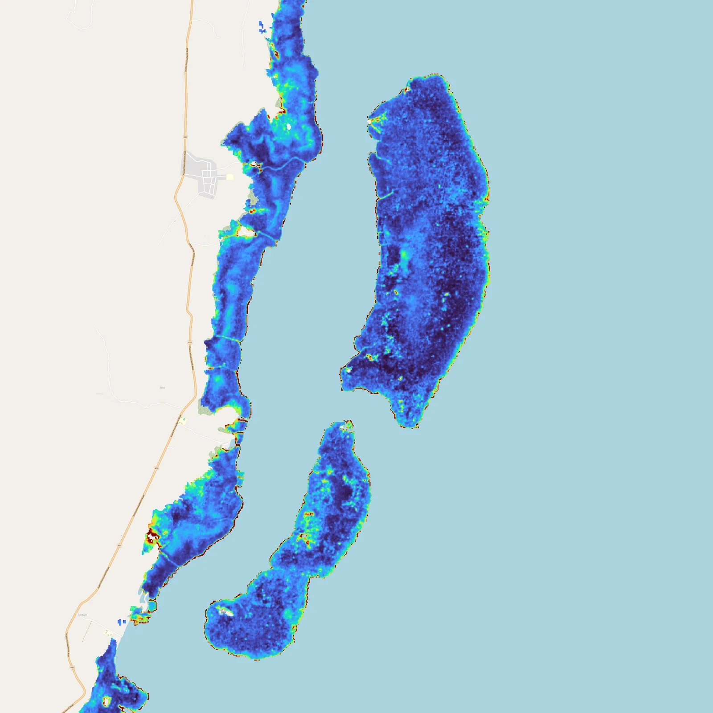
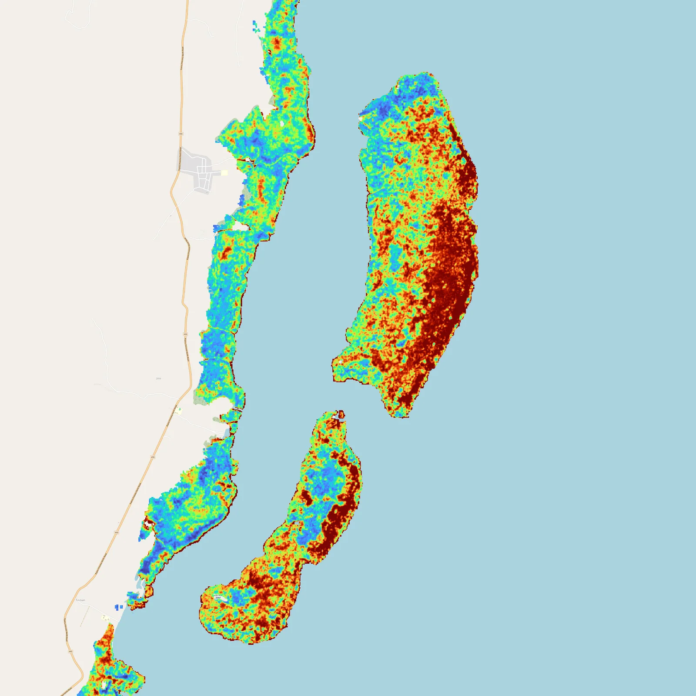
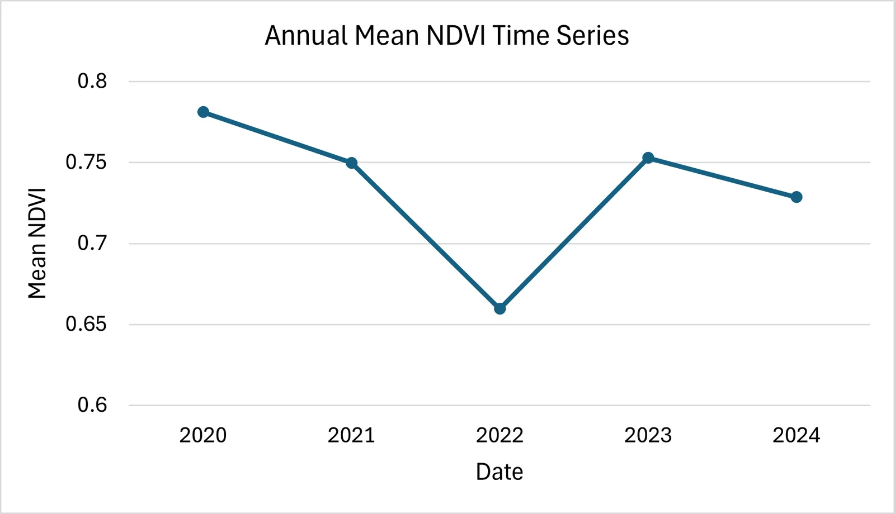
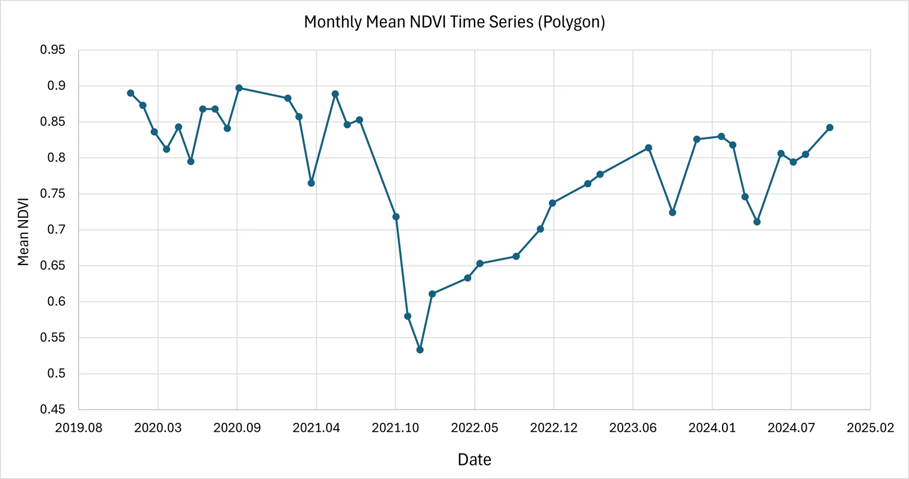
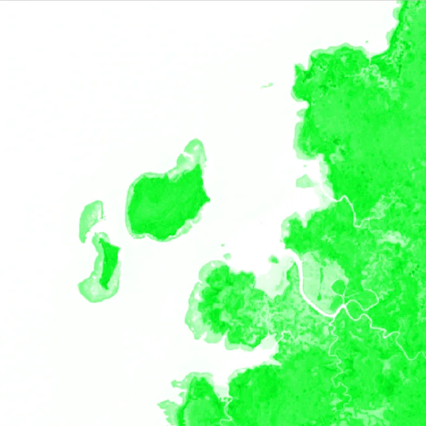
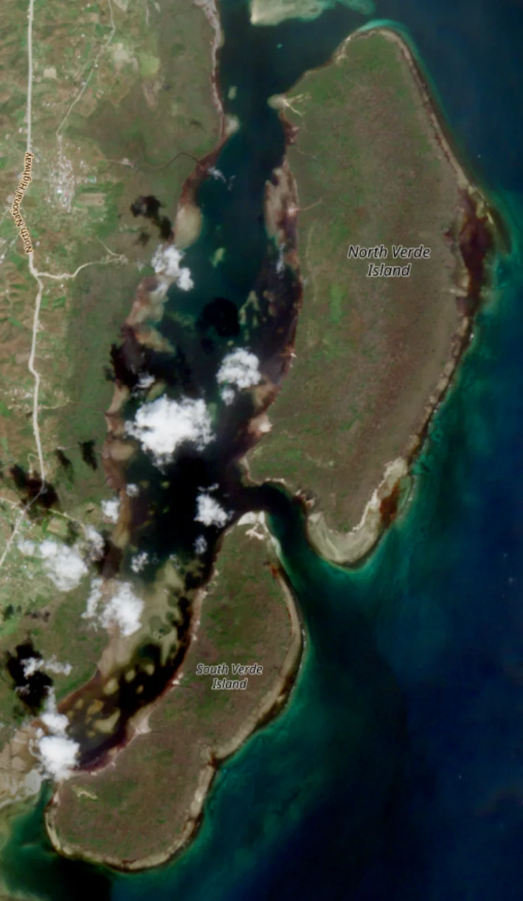
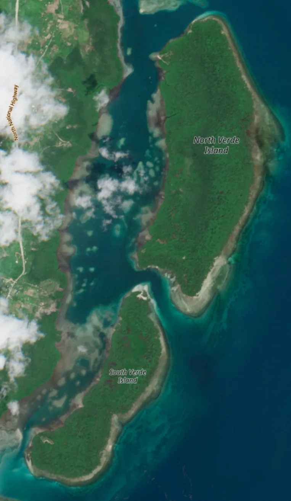

← 프로젝트 목록← All projects
맹그로브 분포 · 변화 모니터링Mangrove Extent & Change Monitoring
입사 후 첫 프로젝트. Google Earth Engine과 Random Forest로 맹그로브를 분류하고, 태풍 전후 5년 NDVI 시계열로 회복 과정을 추적했다.My first project here. Classified mangroves with Google Earth Engine and Random Forest, then tracked five years of NDVI to follow post-typhoon recovery.
배경 · 목표Background
- 입사 후 첫 프로젝트로, GEE와 머신러닝 기반 모니터링 역량을 구축하는 것이 목적이었다.
- 글로벌 블루카본·맹그로브 탄소시장 수요 증가에 대응한 원격탐사 기술 탐색.
- 필리핀 팔라완 등 태풍 피해 지역의 5개년 변화 탐지 가능성 검토.
- My first project here, aimed at building up GEE and machine-learning monitoring capability.
- Motivated by growing demand in blue carbon and mangrove carbon markets.
- Tested five-year change detection over typhoon-affected sites such as Palawan in the Philippines.
방법Method
- Google Earth Engine + Random Forest로 맹그로브 분류 시스템 구현.
- 연중 구름 30% 미만 영상만 골라 median 합성 영상을 제작.
- ALOS DSM < 30 m, NDVI > 0.15 임계값으로 후보 지역 제한.
- GMW(Global Mangrove Watch) 폴리곤 내에서 훈련자료를 선정하고 검증에 활용.
- NDVI·MVI 등 다수 지수를 입력 변수로 사용.
- 2020–2024년 월별·연별 NDVI 시계열 분석으로 태풍 전후 회복 추적.
- Built a mangrove classifier with Google Earth Engine and Random Forest.
- Composited annual medians from scenes with under 30% cloud.
- Constrained candidates with ALOS DSM < 30 m and NDVI > 0.15.
- Drew training samples from inside Global Mangrove Watch polygons, and used GMW for validation.
- Fed multiple indices, including NDVI and MVI, as predictors.
- Tracked post-typhoon recovery through monthly and annual NDVI series, 2020–2024.
결과Results
- GEE Random Forest 맹그로브 분류 프로토타입 완성 — 육안 검토 기준 양호한 구분
- 2020–2024 연별 NDVI 분포도 및 시계열 그래프 산출
- 태풍 이후 담수 유입으로 NDVI가 회복하는 패턴 확인 (맹그로브의 태풍 방어막 역할)
- GMW 대비 분류 결과 비교 분석
- A working GEE Random Forest mangrove classifier with visually sound separation.
- Annual NDVI distribution maps and time series for 2020–2024.
- Observed NDVI recovery after typhoons as freshwater enters — consistent with mangroves acting as storm buffers.
- Comparative analysis against the GMW baseline.








배운 점 · 한계What I learned · Limitations
- GEE 플랫폼과 클라우드 기반 대용량 위성 분석 워크플로우를 익혔다.
- Random Forest의 성능이 훈련 데이터 품질에 얼마나 의존하는지 체감했다 — 구름 낀 영역에서 훈련자료를 추가했더니 결과가 오히려 나빠졌다.
- 한계: 현장 검증 데이터가 없어 정확도 개선에 명확한 한계가 있었다.
- Picked up GEE and cloud-scale satellite analysis workflows.
- Felt how much Random Forest depends on training-sample quality — adding samples from cloudy areas actively made results worse.
- Limitation: with no field validation data, there was a hard ceiling on how far accuracy could be pushed.
산출물Deliverables
- 맹그로브 모니터링 발표자료
- GEE Random Forest 분석 결과
- Mangrove monitoring deck
- GEE Random Forest results
원본 보고서와 발표자료는 사내 자료로 공개하지 않습니다. 분석 코드는 GitHub에 정리되어 있습니다.Source reports and decks are internal and not published here. Analysis code is organised on GitHub.